Linear Regression Done Right
In several of my previous posts I wrote about linear regression, but in none I wrote about when and how to use it correctly and how to interpret the results. Computing a simple regression line is easy, but applying it blindly will surely lead to incorrect results.
Residuals
Let's assume the following two vectors, X=[x1, .., xn] and Y=[y1, ... yn]. Let us assume the regression line y=ax+b. We have the following definitions:
-
Residuals are a vector
R=[r1, ...,rn]withri = a * xi + b - yi, that is, the difference between the points given by the regression line and the observed values ofY -
Least square method minimizes the function
f(a, b) = sum(ri^2)by solving the system of equationsdf(a,b)/da = 0anddf(a, b)/db = 0 -
R^2, the coefficient of determination, is the proportion of the variance in the dependent variable that is predictable from the independent variable(s) and is defined by
R^2 = Var(ax+b) / Var(Y). It is located between 0 and 1. -
Lag 1 autocorrelation defined as
CORREL([x2, .. ,xn], [x1, .. xn-1])and is a measure of how much values at pointiare similar to the values at pointi-1
In order to check that a linear regression model is correct, we need to examine the residuals. These residuals need to have the following properties:
- Have 0 mean
- All of them should have the same variance, meaning all the residuals are drawn from the same distribution
- Be independent of each other
- Be independent of X
- Be normally distributed
In general:
- Low R^2, plot of Y vs X has no pattern - no cause-effect relationship
- Hi R^2, residuals not independent of each other - not properly defined relathionship, maybe non-linear
- Low R^2, residuals not independent of X - incomplete relationship, there is something other factor to be taken into consideration.
A good regression example
Let's do an example in Excel. Let's consider X = RANDBETWEEN(10,100) and Y = 100 + 3 × X + RANDBETWEEN(−100, 100). This leads to Y being in linear relationship with X with the paramenters b=100 and a=3. In Excel, slope (a') and intercept (b') are computed with the formulas a' = SLOPE(Y, X) and b' = INTERCEPT(Y, X). Running these lead to a'=3.06 and b'=91.56 and an R^2=0.81, where R^2 = Var(Regressed Y) / Var(Y) as noted before. This means that 81% of the variation of Y is explained by the regression model. More on the interval of confidence for these values later in this post.
Let's look now at the residuals:
- Lag 1 autocorrelation of the residuals is 0.12, which is low enough (check that residuals are independent of each other)
- R^2 is high enough, but not too high. An R^2 higher than 90% almost surely means that the lag 1 autocorrelation is too high and we need to revise the model
- And then we inspect the distribution of residuals vs X. Should be highly uncorrelated.
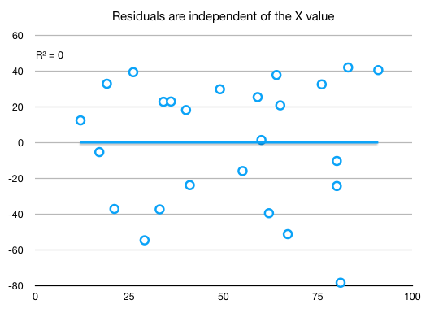
and the regression line
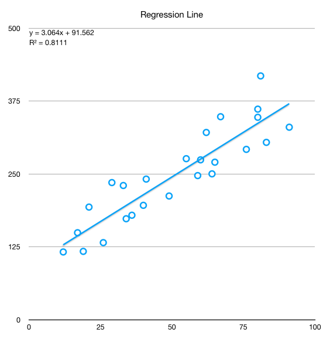
A not so good regression example
Let's consider now the same X as before, but this time Y defined in a square relationship to Y. We apply the regression steps described before and we obtain:
- Regression line
y = 326.66 * x - 6660 R^2 = 0.9586- very high, over0.9, which hints the model is problematicLag 1 autocorrelation = 0.16- low, but is low from a mistake. We should have sorted by X the data series before to see the real correlation.
When we inspect the scatter plot of residuals vs X we see a pattern where should be none:
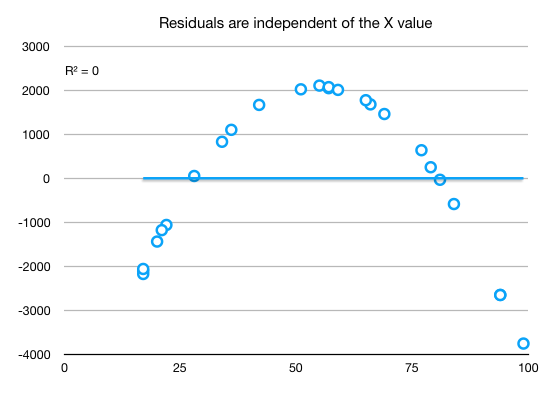
And the regression line showing also that the linear relationship does not properly capture the data:
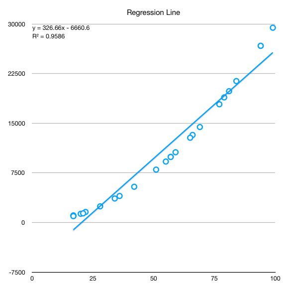
Improving the regression
When we have a series that has an underlying pattern, we need to deflate the series in order to bring the residuals as close as possible to their desired properties. Usually, a series that has an underlying pattern exhibits large variations towards its ends. Examples of such series is price evolution of stocks which need to be deflated by the inflation, prices vs demand, any time series as they usually tend to follow either periodic patterns or exhibit some kind of growth or both. If we don't want to (or can't) find such underlying patterns, the most simple general method of deflating the series with good results is switching to percentage returns. These can be calculated by one of the following formulas:
%return(t) = ln(value(t)) - ln(value(t-1))or%return(t) = (value(t) - value(t-1)) / value(t-1)
For small variations, up to 20%, the two formulas give almost identical results due to the mathematical properties of the natural logarithm. For higher variation, the logarithm shows excessive dampening of the values. See the chart below for %returns for a series computed through both methods.
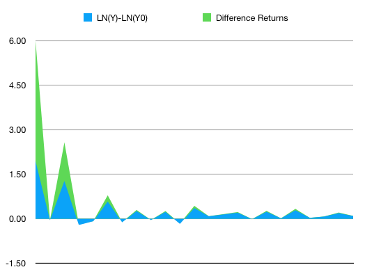
Better than mine explanations here:
Logging a series often has an effect very similar to deflating: it straightens out exponential growth patterns and reduces heteroscedasticity (i.e., stabilizes variance).
Logging is therefore a "poor man's deflator" which does not require any external data (or any head-scratching about which price index to use).
Logging is not exactly the same as deflating--it does not eliminate an upward trend in the data--but it can straighten the trend out so that it can be better fitted by a linear model.
Deflation by itself will not straighten out an exponential growth curve if the growth is partly real and only partly due to inflation.
And
The logarithm of a product equals the sum of the logarithms, i.e., LOG(XY) = LOG(X) + LOG(Y), regardless of the logarithm base. Therefore, logging converts multiplicative relationships to additive relationships, and by the same token it converts exponential (compound growth) trends to linear trends.
And
LN(X * (1+r)) = LN(X) + LN(1+r) ≈ LN(X) + r
Thus, when X is increased by 5%, i.e., multiplied by a factor of1.05, the natural log of X changes fromLN(X)toLN(X) + 0.05, to a very close approximation. Increasing X by 5% is therefore (almost) equivalent to adding 0.05 to LN(X).
Going back to the regression
We will use logging in this example. Steps below:
- Sort the series by the X term. Only doing this skyrockets the lag 1 autocorrelation to 0.75.
- Add an additional column with formula
X' = ln(X(t)) - ln(X(t-1)) - Add an additional column with formula
Y' = ln(Y(t)) - ln(Y(t-1)) - Do the regression on
Y' = aX' + b, which basically say for an increase of x% in X, corresponds a linear increase of y% in Y, this being the reason for transforming both X and Y to percentage returns. - Inspect the residuals of the linear regression
- If the residuals exhibit the desired properties, compute Y as regression from X (undo the transformations). Please note that since the regression was based on increases, the whole process now is integrative, depending on the previous value. Therefore, the errors tend to accumulate the more periods we aim to forecast but also due to the high amplitude of the exponential transform.
Y-regressed(t) = EXP(y' + LN(y(t-1))) - Finally inspect the residuals of the full regression
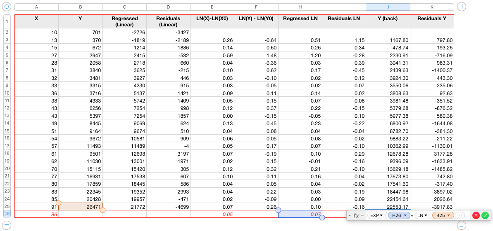
Results inspection:
Low R^2, lag 1 autocorrelation of only 0.08, highly independent of X, seem rather normally distributed:
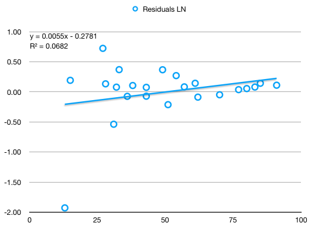
Reverting to initial scale (before the percentage returns transformation), residuals show a tendency to accumulate errors towards the right extreme.
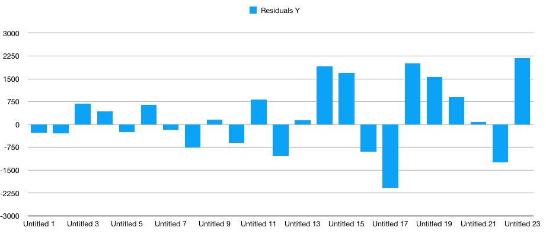
Plots of originally observed Y vs X and regressed Y vs X show good capture of the fundamental X^2 coefficient as well as a good fit:
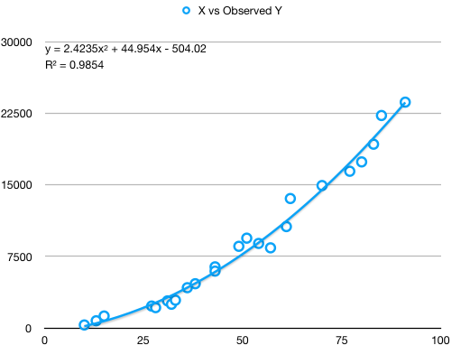
and
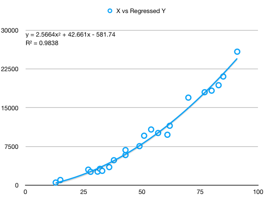
And finally, observed Y vs Y regressed show a strong linear relatinon of slope almost 1, but with visibly increasing errors towards the right extreme:
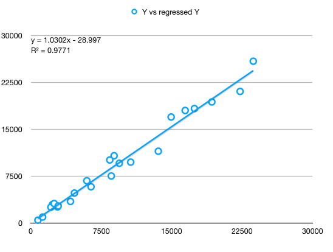
Conclusions - simple linear regression
- Residuals must be inspected in order to make sure the regression is correct and captures the underlying movement of data.
- Timeseries usually need to be transformed to percentage gains.
- Obviously, while the transformation towards percentage returns still tends to accumulate errors as X grows, it still captures much better the data.
- In the example above, a significant part of the increase in error is due to the way I generated the Y vector in the first place:
Y = 3 * X * (X+RANDBETWEEN(-10, 10)) + RANDBETWEEN(-200, 200). Simply by using this formula, the errors increase towards the end because the generated (observed) data has proportionally more variation towards the end. - As with any model, visual inspection of the end result is very important.
- Using the percentage gain obtained by difference will lead to slightly different results.
Multiple linear regression
A multiple regression is a function y = c0 + c1 * f1 + ... + cn * fn, a generalization of the simple linear regression described above.
In Excel, the function to perform multiple linear regression in LINEST - attention, the returned coefficients are in reversed order.
Things to check for in a multiple linear regression:
- Multicollinearity between factors
- Adjusted R^2 - penalizes regression models that has included irrelevant factors. R^2 is misleading with multiple regression as it only goes up as we add more and more variables. Wikipedia
- Residuals
- F-statistic
- Standard errors of coefficients
Here is how to compute adjusted R^2 for a multiple regression:
X = data[data.columns[0:-1]]
y = data[data.columns[-1]]
lr = LinearRegression()
lr.fit(X, y)
r2 = lr.score(X, y)
n = len(X) # sample size
p = len(X.columns) # number of explanatory variables
adj_r2 = 1 - (1-r2) * (n - 1)/ (n - p - 1)
print(f"r2={r2}")
print(f"adjusted r2={adj_r2}")
Dummy variables for categorical data
Let's consider a 2-category model, let's say male and female. For this we introduce two dummy variables (c1 and c2), one for intercept and one for slope. The variable for intercept (c1) will be 0 if male and 1 if female, while the variable for slope will be 0 if male and x if female. If we want do to a regression, the regression line would look like:
y = a1 + (a2-a1) * c1 + (b2-b1) * c2 + b1 * x which is equivalent with the generic multiple regression equation
y = f0 + f1 * c1 + f2 * c2 + f3 * x
Explanation is simple. If the character is a male, c1 and c2 will be 0 thus leading to y_male = a1 + b1*x. If the character is femaile, c1=1 and c2=x, leading to y_female=a2 + b2*x.
We may not want the slope influence to be reflected, but only the intercept. In this case, we would only add a single binary dummy variable.
We can generalize this to k categories. To avoid multicollinearity, we will introduce k-1 dummy variables for intercept and k-1 for slope, if we want to consider slope as well.
Polynomial regression
Assuming we want to fit a model that looks like Y = b0 + b1 * X + b2 * X^2 + ..., we can simply reduce it to multiple linear regression by selecting our features as X = [1, X, X^2, X^3, ...]. In this case, we should seriously consider scaling the features [X, X^2, ..., X^n] if we want our model to converge sufficiently fast.
Standard errors of coefficients
Given the multiple regression line from above, the points (xi, yi) for which we estimate the regression coefficients are just a sample of the total population of possible (xi, yi) pairs. Thus each coefficient, c0 ... cn, is normally distributed and we can estimate the mean and sigma for each of these coefficients. Obviously, the lower the standard error (SE) of each coefficient, the higher confidence we can have that that parameter is close to correctness.
Now, what we have is a coefficient ci for each of the factors. The question is, is each of these factors relevant? Differently said, if ci == 0, that factor would be irrelevant. Now we need to see if ci == 0 is probable enough so that it cannot be discarded that is, if the ci for the whole population would actually be 0 (null hypothesis), how probable would it be for us to observe the value obtained from performing the regression?
To answer the question above we compute what is called the t-statistic. t-statistic(ci) = ci / SE(ci). The t-statistic measures how many standard errors we are away from the mean if the mean were 0, that is if the ci coefficient for the entire population were 0.
Here is an example on how to compute the SE:
from statsmodels.formula.api import ols
import statsmodels.api as sm
# add the intercept
X_ = sm.add_constant(X, prepend=False)
model = sm.OLS(y, X_)
results = model.fit()
print(results.summary())
"""
We will consider to compute the t-test for income
H0: income has no predictive power on the outcome of the regression
Given ci as the coefficients of the regression,
t-statistic(ci) = ci / SE(ci)
and
SE(ci) = sqrt(residuals_sigma^2 * diagonal((X.T * X)^-1))
"""
X_arr = X_.to_numpy()
SE_arr = np.sqrt(results.resid.var() * np.linalg.inv(np.dot(X_arr.T, X_arr)).diagonal())
SE = pd.DataFrame(SE_arr, index=X_.columns).T
t_statistic = results.params['income'] / SE['income']
# t-statistic is the same in both the library implementation and or implementation
From this we extract the following rule of thumb:
The value of each coefficient divided by its standard error should ideally be greater than 3. If the ratio slips below 1, we should remove the variable from the regression. Wikipedia 1 and Wikipedia 2
From the t-statistic we compute the p-value, which quantifies the probability that we obtain for ci a value greater or equal to what we obtained through regression, provided that ci were actually 0. That means, we look for a very low p-value which corresponds to a high t-statistic in order to determine the relevance of this particular factor in the model. Equivalent to a t-statistic of 3 is a p-value of roughly 0.05% (3 deviations from the mean, two-sided p-value).
The F-statistic
How good, overall, is our model? That is, if all our regression parameters were 0, how far would our residuals be from residuals that would be generated from an intercept-only model.
The F value in regression is the result of a test where the null hypothesis is that all of the regression coefficients are equal to zero. In other words, the model has no predictive capability.
Basically, the f-test compares your model with zero predictor variables (the intercept only model), and decides whether your added coefficients improved the model. If you get a significant result, then whatever coefficients you included in your model improved the model’s fit.
If all ci == 0, then the total variance of the residuals in this case would be the total variance of Y, which is the absolute maximum variance the model can have. If our model were to bring value, then the variance of the residuals would be much lower than the total variance of Y. Just like the t-statistic, the f-statistic measures how far from the maximum variance our residual variance is, that is how far Var(Residuals) / Var(Y) is from 1.
Stepwise selection for model features
We use the tests before to get which model coefficients are truly relevant for our model. The actual model determined gradually, starting from all features available (usually) and reducing one by one the features which don't have enough relevance. In the example below we also plot the Akaike Information Criterion (AIC) to show how it evolves while features are gradually pruned.
# stepwise selection
all_coefs_are_relevant = False
X_ = sm.add_constant(X, prepend=False)
to_plot = []
while not all_coefs_are_relevant:
model = sm.OLS(y, X_)
results = model.fit()
all_coefs_are_relevant = results.pvalues.max() <= 0.05
to_plot.append(results.aic)
print(f'Iteration AIC={results.aic}, continue={not all_coefs_are_relevant}')
if not all_coefs_are_relevant:
X_ = X_[results.pvalues[results.pvalues < results.pvalues.max()].index.values]
results.summary()
plt.plot(to_plot)
plt.show()
In Python, another way to perform feature selection is by employing this class from SKLearn. It has options for selecting features for both regression and classification tasks.
Worked example
I have generated some data to create a regression model here. The data assumes a team of 3 people working on a software module, with 3 types of tasks: front-end, backend and data. As time passes, the complexity of the code base increase thus also estimations tend to increase. The data includes a measure for code complexity, the type of task, initial estimation given by each developer, which developer worked on each task (there is an affinity for developers for task types, but not 100%) and what was the final duration. We want a model which aims to predict the final duration of a new task.
The data is chosen in such a way that it presents multicollinearity and categorical components.
First step is to see if maybe a simple regression based on the average estimation given by developers is enough. We notice than, while the trend in task duration correlates with both average estimation and the code complexity, neither are good predictors - rather low R^2 in both cases as well as two divergent trends in the first chart. Both elements hint towards more factors needed to be included in the regression.
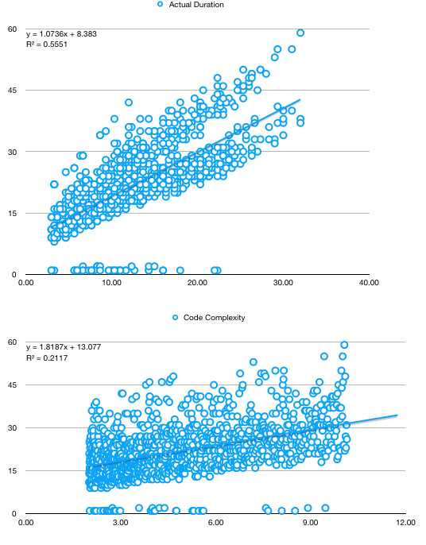
A second step, which we will skip now, is to analyse the duration based solely on time. If we were to do this, we would have to switch to percentage returns to remove the trendiness in data, as explained in a previous section.
The third step is to analyse muticollinearity. When we start scatter-plotting one variable against the other, we notice very strong correlations - note that, for estimations, they are from the start based on Fibonnaci numbers, thus the several parallel lines instead of a cloud of points.
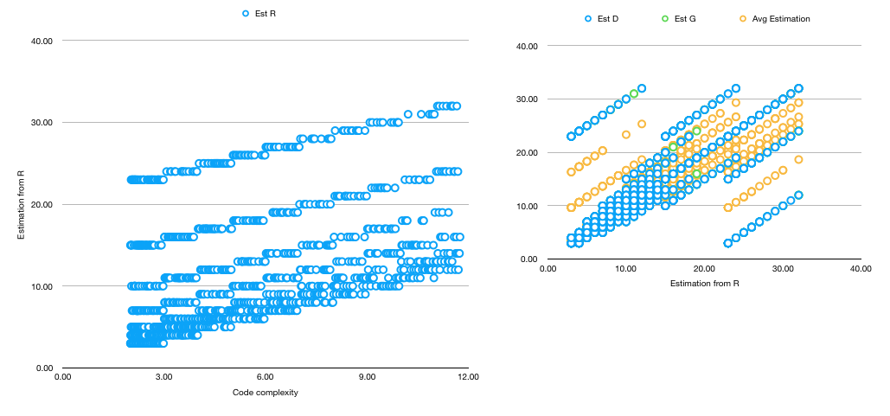
From the multicollinear variables, seems the "Average Estimation" explains the best the variation in duration, thus we will keep it and discard the rest.
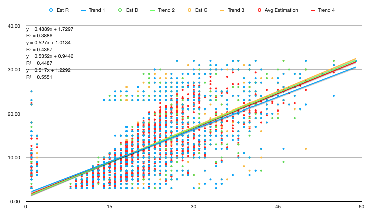
After doing our analysis, we will take into consideration the following factors:
- Backend task
- Frontend task
- Average estimation
- Worked R - slope dummy variable, multiplied by the predictor "average estimation"; we want to see how who worked on the task influenced the end-duration
- Worked D
- Number of incidents
we don't include also the Worked R, D slope dummy because they highly lag 1 autocorrelate to Frontend task and Backend task.
Python code
import pandas as pd
import numpy as np
from matplotlib import pyplot as plt
def y_regressed(factors, coef_matrix):
coef = np.array(coef_matrix)
factors = np.array(factors)
factors = np.hstack((np.ones((factors.shape[0], 1)), factors))
return np.dot(factors, coef.T)
def r_squared(Y, Y_regressed):
Y = np.array(Y)
Y_regressed = np.array(Y_regressed)
return np.var(Y_regressed) / np.var(Y)
def adjusted_r_squared(Y, Y_regressed, no_of_factors):
""" Number of factors DOES NOT include the intercept """
# the level at which adjusted R2 reaches a maximum, and decreases afterward,
# would be the regression with the ideal combination of having the best fit
# without excess/unnecessary terms.
r_sq = r_squared(Y, Y_regressed)
sample_size = len(np.array(Y))
return 1 - (1-r_sq) * (sample_size - 1) / (sample_size - no_of_factors - 1)
def residuals(Y, Y_regressed):
# add a column of ones in front to ease with multiplication
Y = np.array(Y)
Y_regressed = np.array(Y_regressed)
return Y - Y_regressed
def cov(_x, _y):
x = _x.flatten()
y = _y.flatten()
if x.size != y.size:
raise Exception("x and y should have the same size")
mean_x = np.mean(x)
mean_y = np.mean(y)
N = x.size
return (1 / N) * np.sum((x - mean_x) * (y - mean_y))
def cov_mtx(X, Y):
return np.array([[cov(x, y) for y in Y] for x in X])
def lin_regress_mtx(Y, Fs):
# Multiple regression: Y = As + sum(i, Bi * Fi)
# Bs = cov(Y, F) * cov (F, F)^(-1)
# As = mean_Y - sum(bi * mean_xi)
# Does multiple regressions of the same factors at the same time
# if Y is a matrix, instead of a single column
# useful for regressing various stocks on a single set of factors, in one operation
# convert to numpy array
Y = Y.values.T
Fs = Fs.values.T
Cxx = cov_mtx(Fs, Fs)
Cyx = cov_mtx(Y, Fs)
Bs = Cyx.dot(np.linalg.inv(Cxx))
mean_Fs = np.mean(Fs, axis=1)
As = np.array([[np.mean(y) - np.dot(bs, mean_Fs)] for y, bs in zip(Y, Bs)])
return pd.DataFrame(np.hstack((As, Bs)))
And the usage:
data = pd.read_csv('task-data.csv', index_col='Task ID')
factors = ['Backend Task', 'FrontEnd Task', 'Avg Estimation', 'Worked R', 'Worked D', 'No of Incidents Per Period of Time']
result = ['Actual Duration']
# get the coefficients
coef_matrix = lin_regress_mtx(data[result], data[factors])
# compute the results of the regression on the original data
Y_regressed = y_regressed(data[factors], coef_matrix)
Y = np.array(data[result])
# compute R^2
print(r_squared(Y, Y_regressed))
# plot Y against Y_regressed to visually assess the quality of the regression
plt.scatter(Y, Y_regressed)
plt.show()
# plot the residuals to inspect their properties
resid = residuals(Y, Y_regressed)
plt.plot(resid)
plt.show()
# adjusted R^2
print(adjusted_r_squared(Y, Y_regressed, len(factors)))
With the following results:
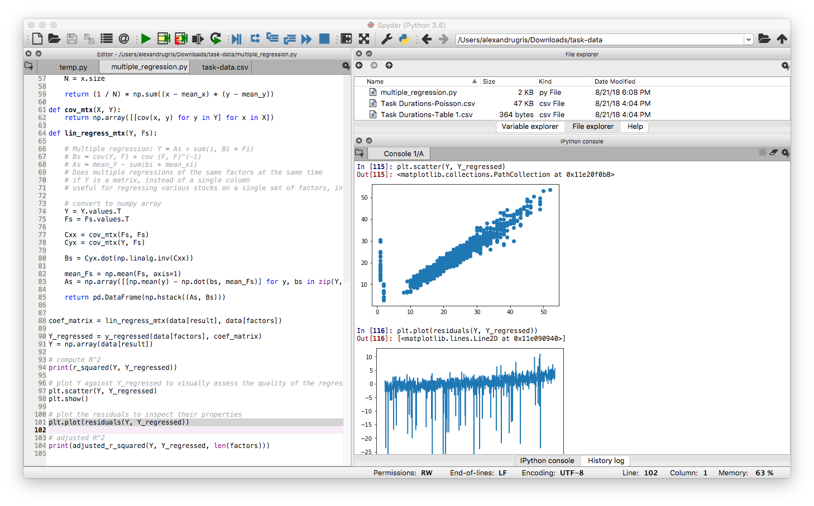
It is obvious that except some outliers the residuals are quite normally distributed. However, they have a trend upwards which should be investigated.
It also is quite obvious that the results of the regression are not far from the observed data. This is numerically highlighted also by the rather high R^2 and adjusted R^2.
Coefficients are a little bit strange though: 17.674954 -0.244873 -1.934692 0.933654 0.383172 -0.031911 -1.19284. A high intercept and a negative correlation with the number of incidents. The number of incidents is selected to be Poisson distributed with a mean of 5, no matter the code complexity. This, together with a high margin of error in the way the Inverse Poisson was computed in Excel which leads to a predisposition towards lower numbers, might be interpreted as "as the code complexity increases, the team becomes less confident in its ability, but still finishes faster than their too pessimistic estimates". The extra average added by the incidents is included in the intercept, while the predisposition for lower numbers is included in the negative factor for the incidents.
The next steps are:
- Compute the SE for the coefficients
- Analyse the T-Statistic
- Analyse the F-Statistic
I am not going to do them now, but add a link to a paper which show how to compute these values: link here